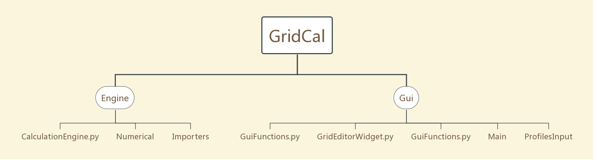

GridCal 代码结构
本章中的内容主要分析 GridCal 的代码结构。通过梳理代码结构，来了解 GridCal 以何种逻辑来实现对应的功能。
代码结构大致如下图。可以看到 GridCal 的功能实现分为界面和计算引擎，具体的功能分别在对应的目录下细化。

Engine
Engine 目录下的文件集成了 GridCal 所有的算法，包括基础电路处理，JSON 文件转换，电网设备参数定义，复数个潮流算法，短路计算，等等。Engine 目录由 CalculationEngine.py 文件，Numerical 文件夹，Importers 文件夹 组成，Numerical 包含了与电网计算直接相关的算法，Importers 包含了软件底层层面的数据处理算法，即如何处理电网参数的数据，如何展现出电网结构，CalculationEngine.py 是一个集成了 Numerical，Importers 所有算法的入口文件，GridCal 通过直接调用 CalculationEngine.py 即可使用所有的算法。
Numerical 文件夹下，包含了 JacobianBased.py，ContinuationPowerFlow.py，HELM.py 等算法文件，包含从数学矩阵处理到具体的潮流实现，开发者可以在这些代码中插入或修改为自己的代码，也可以新建一个新算法的 .py 文件，并在 CalculationEngine.py 中进行调用。
Importers 文件夹下包含了 psat_converter.py，BusDefinitions.py，BranchDefinitions.py 等文件，这些文件更多的是进行软件架构层面的数据处理，开发者如果要在 GridCal 的基础上进行二次开发，应当尽量避免改动这个目录下的文件。
Gui
Gui 目录下集成了和界面有关的所有功能，GridCal 运行后看到的电网界面，以及计算数据的展示、组件的拖拽、按钮的点击效果，都在 Gui 目录下的文件中分别实现。Gui 目录由 Main 文件夹，ProfilesInput 文件夹，以及三个 Gui 功能的 .py 文件组成。Main 文件夹下的文件涉及了 GridCal 基础界面框架的构建，由 PyQt 设计生成，ProfilesInput 文件夹下主要处理了 excel 文件导入到 GridCal 的过程中，具体的数据格式的转换。ConsoleWidget.py，GridEditorWidget.py，GuiFunctions.py 三个文件为主要的 Gui 功能实现（即不涉及底层UI的），包含了按钮与功能的关联，电网画板的逻辑，以及一个集成的 Python 的控制台。
Main 文件夹的内文件包含 Qt Widget 框架的布局代码，icon 文件的索引，以及一些数学展示组件的实现。开发者可以更换一些 icon 的图标文件，但是不建议修改 MainWidow.py 以及 GridCalMain的代码，这可能会导致 GridCal 界面显示以及功能连接不正常。
ProfilesInput 文件夹包含了一整套 excel 数据导入的逻辑。同样也不建议修改这里的逻辑，但是如果是有经验的开发者，可以尝试在此处修改代码，加快 GridCal 读取工程时的速度。
ConsoleWidget.py 文件是专为实现 GridCal 中 IPython 控制台组建而写的。IPython 控制台的作用在于将一个完整的 Python 环境集成到了 GridCal 中，对于 GridCal 的熟练使用者，可以用简短的代码来进行运算或导出数据，直接进行一些调试。
GridEditorWidget.py 文件实现了包含大量关联和逻辑的界面编辑功能，即用户打开软件时，看到的可拖拽操纵界面，就由此文件构建而来。界面编辑内的核心功能包括电网组件编辑，电网数据显示，节点和线路拖拽行为。开发者可以在这部分中将图形组件替换成符合实际应用需求的场景，对一些操作逻辑进行修改以符合生产环境的需求。
GuiFunctions.py 文件主要包含的是界面数据显示的底层处理，例如约定了如何显示浮点数，如何显示字符串，如何显示复数，等等。这部分的内容一般无需修改，修改不当可能会造成显示不全或乱码等问题。
小结
通过对 GridCal 代码结构的分析，可以了解到二次开发的代码切入点主要在于 Numerical 文件夹以及 GridEditorWidget.py 文件，修改或优化数学算法，以及适配针对环境的用户使用功能，是开发者可修改并且应主要针对的开发方向。